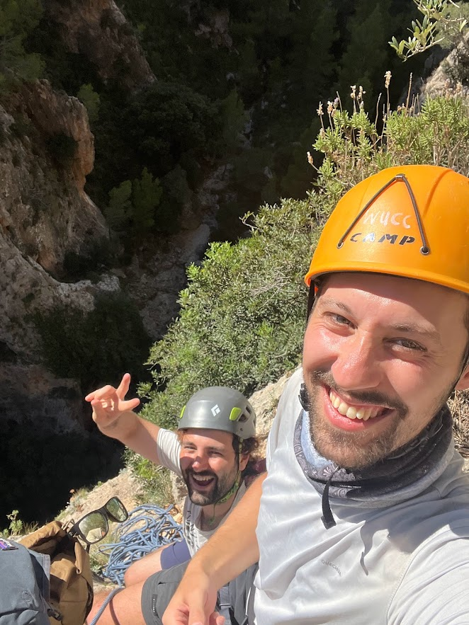
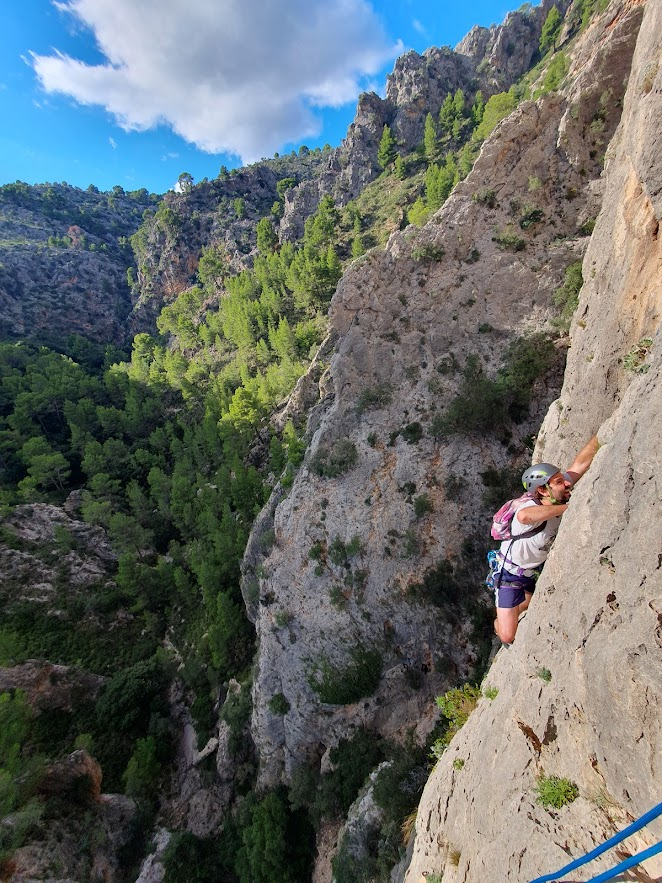
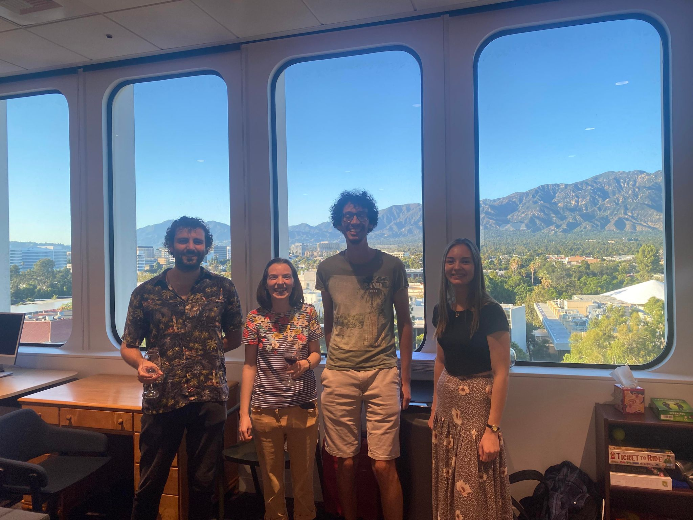
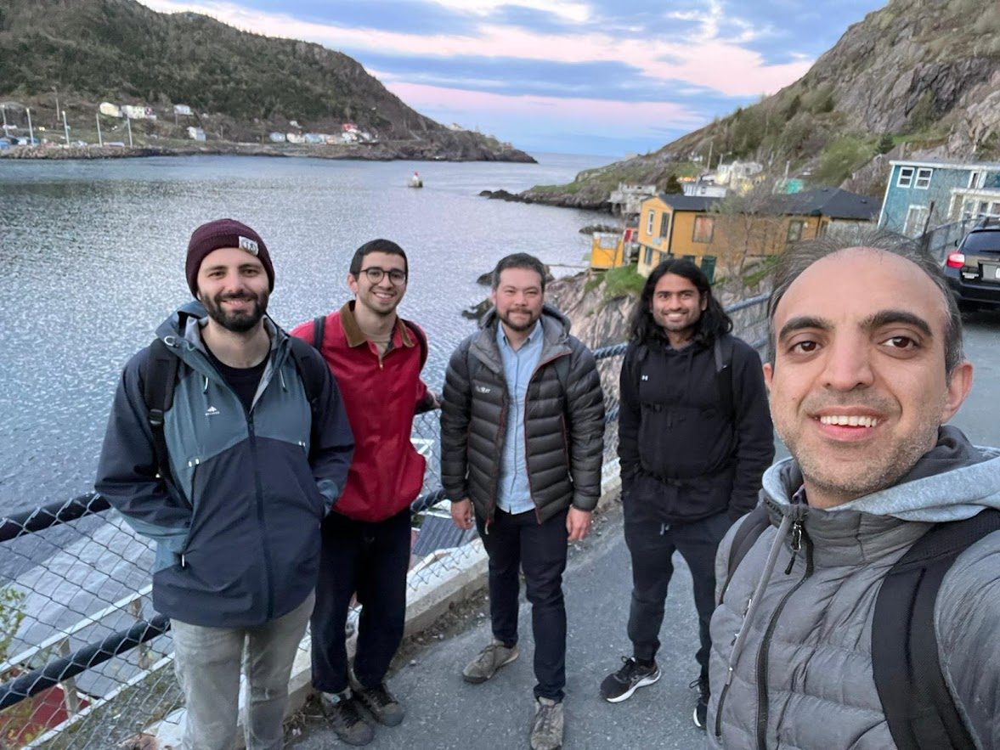
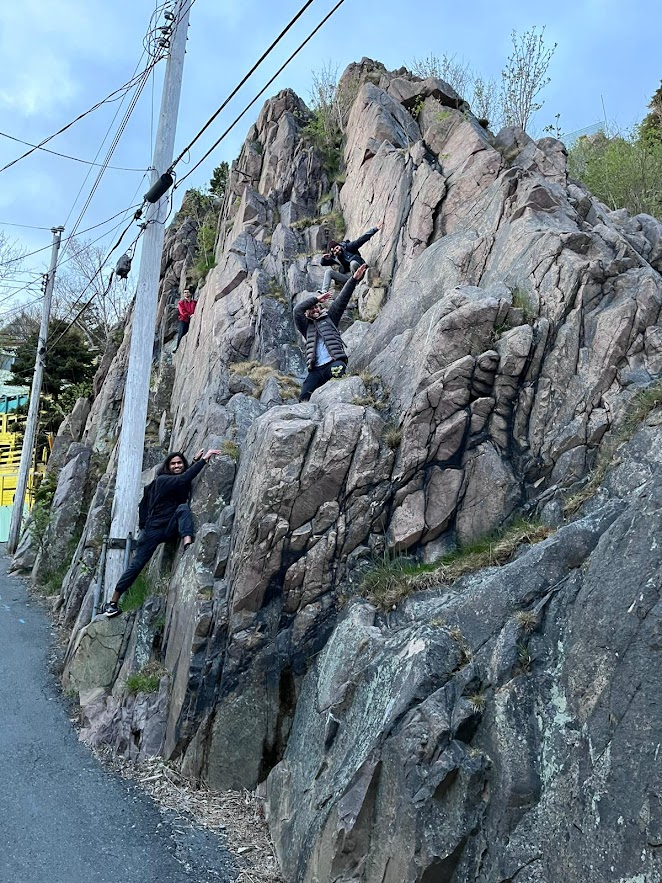

 
The first photo is of Marco Linton and myself on a belay point half way up the Albahida ridge in Mallorca. The second photo is of me climbing on the same route.
The first photo is of our Ph.D. graduation with (from left to right) Tom Brown, Ian J. Leary, Vladimir Vankov, and myself.
The second photo is of the four of us after dinner at Ian's house (we've switched order).

This photo is of Me, Naomi Andrew, Yassine Guerch, and Monika Kudlinska at the AIM workshop on rigidity of free-by-cyclic groups.
In the first photo I am speaking at `topological and homological group theory 2022' in Bielefeld and
in the second photo I am speaking at `young geometric group theory XI' in Munster.
This is a photo of me looking at a poster by Patrick Nairne at `young geometric group theory XI' in Munster.
 
The first photo is of (left to right) Me, Jonah Saks, Nicolaus Touikan, Shivam Arora, and Hadi Bigdely at St John's Newfoundland. The second photo was taken by Hadi and features everyone else.